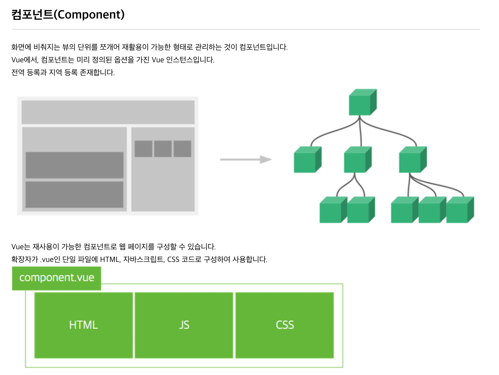

Application 프로젝트 템플릿
Demo frontend 는 vuejs로 개발되어 있으며, Vue 내용을 참조하여 개발자가 구현하도록 가이드 한다.
1. Vuejs 란?
Evan You가 만들었으며, 2014년 릴리즈를 시작으로 꾸준히 발전하고 있는 자바스크립트 프레임워크입니다.
컨트롤러 대신 뷰 모델을 가지는 MVVM(Model-View-ViewModel) 패턴을 기반으로 디자인되었으며,
재사용이 가능한 UI들을 묶어서 사용할 수 있습니다.
- MVVM 패턴

2. Vuejs 구성
